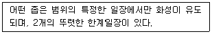
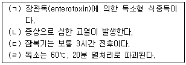
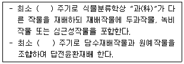
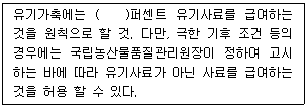
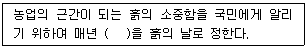
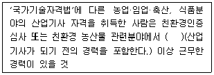
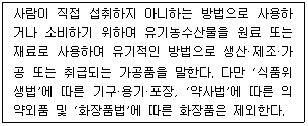
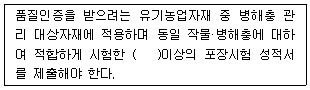

유기농업기사 (2017-03-05 기출문제)
1과목: 재배원론
1. 에틸렌의 주요 생리 작용이 아닌 것은?(오류 신고가 접수된 문제입니다. 반드시 정답과 해설을 확인하시기 바랍니다.)
- 성숙촉진
- 낙엽촉진
- 생장억제
- 개화촉진
(정답률: 26%)

2. 식물체에서 기관의 탈락을 촉진하는 식물 생장 조절제는?
- 옥신
- 지베렐린
- 시토키닌
- ABA
(정답률: 60%)
3. 다음 중 파종 전 처리로 사용되는 제초제는?
- paraquat
- 2,4-D
- alachlor
- simazine
(정답률: 59%)
4. 논토양의 특징으로 틀린 것은?
- 탈질작용이 일어난다.
- 산화환원 전위가 낮다.
- 환원물(N2, H2S)이 존재한다.
- 토양색은 황갈색이나 적갈색을 띤다.
(정답률: 62%)
5. 채소류의 육묘 방법 중에서 공정 육묘의 이점이 아닌 것은?
- 모의 대량생산
- 기계화에 의한 생산비 절감
- 단위면적당 이용률 저하
- 모 소질 개선 가능
(정답률: 82%)
6. 염류집적의 피해 대책으로 틀린 것은?
- 객토
- 심경
- 피복재배
- 담수처리
(정답률: 58%)
7. 모관수의 토양 수분 함량은?
- pF 0 ~ 2.7
- pF 2.7 ~ 4.5
- pF 4.5 ~ 7
- pF 7 이상
(정답률: 76%)
8. 유전자 발현을 조절하고 기공의 열림을 촉진하는 광 파장은?
- 적색광
- 청색광
- 녹색광
- 자외선
(정답률: 42%)
9. 내건성이 강한 작물이 갖고 있는 형태적 특성은?
- 잎의 해면 조직 발달
- 잎의 기동세포 발달
- 잎의 기공이 크고 수가 적음
- 표면적/체적의 비율이 큼
(정답률: 44%)
10. 도복에 대한 설명으로 틀린 것은?
- 화곡류에서 도복에 가장 약한 시기는 최고 분얼기 이다.
- 병해충이 많이 발생할 경우 도복이 심해진다.
- 도복에 의하여 광합성이 감퇴되고 수량이 감소한다.
- 도복에 대한 저항성의 정도는 품종에 따라 차이가 있다.
(정답률: 77%)
11. 논토양에서 유기태 질소의 무기화가 촉진되기 위한 방법으로 틀린 것은?
- 토양 건조 후 가수
- 담수
- 지온 상승
- 수산화 칼슘 처리
(정답률: 38%)
12. 토성을 분류하는데 기준이 될 수 없는 것은?
- 자갈
- 모래
- 미사
- 점토
(정답률: 65%)
13. 탄산시비의 효과가 아닌 것은?
- 수량증대
- 품질향상
- 착과율 감소
- 모 소질 향상
(정답률: 78%)
14. 잡초의 해로운 작용이 아닌 것은?
- 유해물질의 분비
- 병충해의 전파
- 품질의 저하
- 작물과 공생
(정답률: 86%)
15. 수비(이삭거름)는 벼의 일생 중 어느 생육단계에 시용하는 가?
- 유수분화기
- 유수형성기
- 감수분열기
- 수전기
(정답률: 63%)
16. 광합성에서 C4작물에 속하지 않는 것은?
- 옥수수
- 수수
- 사탕수수
- 벼
(정답률: 75%)
17. 벼 병해형 냉해의 증상으로 틀린 것은?
- 화분의 수정 장해
- 규산흡수의 저해
- 광합성의 감퇴
- 단백질 합성의 저하
(정답률: 41%)
18. 종자를 치상 후 일정 기간까지의 발아율을 무엇이라 하는 가?
- 발아세
- 발아시
- 발아전
- 발아기
(정답률: 64%)
19. 벼의 비료 3요소 흡수 비율로 옳은 것은?
- 질소 5 : 인산 1 : 칼륨 1.5
- 질소 5 : 인산 2 : 칼륨 4
- 질소 4 : 인산 2 : 칼륨 3
- 질소 3 : 인산 1 : 칼륨 4
(정답률: 54%)
20. 고무나무와 같은 관상수목을 높은 곳에서 발근시켜 취목하는 영양번식 방법은?
- 분주
- 고취법
- 삽목
- 성토법
(정답률: 80%)
2과목: 토양비옥도 및 관리
21. 건조한 토양 1000g에 Ca2+, 2 cmolc/kg이 치환 위치에 있다면 가장 효과적으로 치환 할 수 있는 조건을 가진 물질과 농도는 다음 중 어떤 것인가?
- Al3+ , 1 cmolc/kg
- Mg2+ , 2 cmolc/kg
- Na+, 1 cmolc/kg
- K+, 2cmolc/kg
(정답률: 71%)
22. 논토양과 밭토양의 특성 비교로 옳은 것은?
- 밭토양은 논토양보다 침식이 적다.
- 논토양은 밭토양보다 산도가 낮다.
- 논토양은 밭토양보다 미량요소 결핍이 적다.
- 밭토양은 논토양보다 총 질소공급량이 많다.
(정답률: 67%)
23. 과수원 1000m2 면적에 토심 45cm까지 물을 주고자 하는 데 현재 수분함량이 15%이고 목표로 하는 수분 함량이 25%로 1회 주어야 하는 물의 양은? (단, 용적밀도는 1g/cm3)
- 15 m3
- 25 m3
- 35 m3
- 45 m3
(정답률: 49%)
24. 토양 비옥도 평가 중 영양소의 유효도 결정 방법으로 적합하지 않은 것은?
- 토양분석
- 토양 단면조사
- 결핍증상 관찰과 식물체 분석
- 식물재배 시험
(정답률: 70%)
25. 토양의 견지성(Consistency)에서 가소성(Plas-ticity)을 실험한 결과이다. 소성지수(PI)를 계산 하였을 때, 토성이 가장 사질화에 가까운 것은?
- 액성한계(LL) : 55, 소성한계(PL) : 37
- 액성한계(LL) : 52, 소성한계(PL) : 35
- 액성한계(LL) : 50, 소성한계(PL) : 34
- 액성한계(LL) : 48, 소성한계(PL) : 33
(정답률: 75%)
26. 달시(Darcy) 공식에 준하여 유속(Flux)을 조사할 때 필요하지 않은 항목은?
- 수리전도도 계수
- 토주의 길이
- 용적밀도
- 수두차
(정답률: 61%)
27. 어떤 토양의 흡착 이온을 분석한 결과 Mg=2cmol/kg, Na=1cmol/kg, Al=2cmol/kg, H=4cmol/kg, K=2cmol/kg 이었다. 이 토양의 CEC가 12cmol/kg 이고 염기 포화도는 75%로 계산되었다. 이 토양의 치환성 칼슘의 양은 몇 cmol/kg으로 추정 되는가?
- 1
- 2
- 3
- 4
(정답률: 45%)
28. 작물의 필수 원소 중 공중으로부터 흡수 될 수 있는 원소는?
- N, P, K
- Ca, Mg, S
- Cl, B H
- C, O, H
(정답률: 84%)
29. 퇴비 제조의 목적으로 틀린 것은?
- 유기물의 탄질률을 약 20으로 하여 사용 후의 급격한 분해와 질소기아를 방지한다.
- 유기물 중의 해충, 잡초의 종자를 고열로 죽인다.
- 유기물에 포함되는 무효태 양분을 퇴비화 함으로서 유효화 한다.
- 악취를 없애므로 취급이 편리하고 가스 발생 등이 없어서 안심하고 사용 할 수 있다.
(정답률: 45%)
30. 가장 효과적으로 양이온 치환용량을 높일 수 있는 방법으로 토양 관리법은?
- 토양 유기물함량을 낮춘다.
- 수소이온 농도를 증가시킨다.
- 토양에 점토를 보충한다.
- 토양에 통기성을 좋게 한다.
(정답률: 63%)
31. 토양을 이루는 기본 토층으로, 미부숙 유기물이 집적된 층과 점토나 유기물이 용탈된 토층을 나타내는 각각의 기호는?
- 미부숙 유기물이 집적된 층 : Oi, 용탈된 토층 : E
- 미부숙 유기물이 집적된 층 : Oe, 용탈된 토층 : C
- 미부숙 유기물이 집적된 층 : Oa, 용탈된 토층 : B
- 미부숙 유기물이 집적된 층 : H, 용탈된 토층 : C
(정답률: 50%)
32. 다음의 토양 수분 상태 중 작물의 생육에 가장 유리한 것은?
- 포장용수량 상태
- 위조점 수분 상태
- 흡습수만 존재하는 상태
- 중력수가 존재하는 상태
(정답률: 81%)
33. 국내 비료공정 규격상 요소(UREA)비료의 화학식과 최소 함유 질소량은?
- CO(NH4)4, 40%
- CO(NH3)4, 45%
- CO(NH2)4, 45%
- CO(NH2)2, 45%
(정답률: 48%)
34. 재배기간 중 토양 유실이 가장 큰 작물은?
- 옥수수
- 보리
- 헤어리베치
- 목초
(정답률: 64%)
35. 토양 유기물의 유실이 가장 적은 토양은?
- 지하수위가 높고, 배수가 불량한 토양
- 산소공급이 잘 되는 사력질 토양
- 표토유실이 심한 경사지 토양
- 대공극이 많아 물빠짐이 양호한 토양
(정답률: 54%)
36. 토양의 떼알구조를 유지 및 생성 시키는 조건과 관계없는 것은?
- 수화도가 낮은 양이온성 물질을 토양에 준다.
- 토양에 미생물 활동이 활발한 조건을 부여 한다.
- 건조와 습윤 조건을 반복시켜 토양을 관리한다.
- 녹비작물이나 목초를 재배한다.
(정답률: 67%)
37. 토양이 산성화 되면 일어나는 현상으로 틀린 것은?
- 콩과 작물의 생육은 저하 된다.
- 미생물 활동이 저하 된다.
- Mo, S의 유효도가 증가한다.
- Al, Cu, Mn 이온 과다로 작물 생육이 저하된다.
(정답률: 78%)
38. 밭토양의 유형별 개량 방법으로 가장 알맞게 짝지어진 것은?
- 보통밭 : 모래 객토, 심경, 유기물 시용
- 사질밭 : 모래 객토, 심경, 유기물 시용
- 미숙밭 : 심경, 유기물 시용, 석회시용, 인산 시용
- 중점밭 : 미사 객토, 심경, 배수, 유기물 시용
(정답률: 73%)
39. 다음 중 입단 구조의 특징으로 관련성이 가장 적은 것은?
- 대소공극이 많다.
- 토양입자가 비교적 크다.
- 통기성이 우수해진다.
- 보수력 및 보비력이 우수한다.
(정답률: 76%)
40. 공극률 50%인 밭토양에서 식물 생육에 가장 적절한 액상률은?
- 0%
- 25%
- 50%
- 70%
(정답률: 73%)
3과목: 유기농업개론
41. 고립 상태일 때의 광포화점이 80~100%에 해당하는 것은?
- 콩
- 감자
- 보리
- 옥수수
(정답률: 73%)
42. 유기원예에서 이용되는 천적 중 포식성 곤충이 아닌 것은?
- 고치벌
- 팔라시스이리응애
- 칠레이리응애
- 진디혹파리
(정답률: 65%)
43. 화학 제초제를 사용하지 않고 쌀겨를 투입하여 잡초를 방제하는 경우의 방제원리로 볼 수 없는 것은?
- 논물이 혼탁해져 광을 차단하여 잡초 발아가 억제 된다.
- 쌀겨의 영양분이 미생물에 의해 분해 될 때 산소가 일시적으로 고갈되어 잡초의 발아억제에 도움을 준다.
- 쌀겨에 함유된 제초제 성분이 잡초의 발아를 억제한다.
- 쌀겨가 분해 될 때 생성되는 메탄가스 등이 잡초의 발아를 억제한다.
(정답률: 72%)
44. 중경의 이로운 점이 아닌 것은?
- 발아조장
- 토양 통기의 조장
- 동상해 경감
- 비효증진 효과
(정답률: 53%)
45. 유리섬유를 첨가하지 않은 아크릴 수지 100%의 경질판은?
- FRP판
- FRA판
- MMA판
- PC판
(정답률: 56%)
46. F2 ~ F4 세대에는 매 세대 모든 개체로부터 1립씩 채종하여 집단재배를 하고, F4 각 개체별로 F5계통재배를 하는 것은?
- 집단육종
- 여교배육종
- 파생계통육종
- 1개체 1계통 육종
(정답률: 84%)
47. 다음 중 C3 식물은?
- 옥수수
- 사탕수수
- 기장
- 보리
(정답률: 75%)
48. 친환경관련법상 유기축산물의 인증 구비요건으로 틀린 것은?
- 반추가축에게 사일리지만 급여할 것
- 유전자변형농산물에서 유래한 물질은 급여하지 않을 것
- 합성화합물 등 금지물질을 사료에 첨가하지 않을 것
- 가축에게 생활용수 수질 기준에 적합한 음용수를 상시 급여할 것
(정답률: 85%)
49. 유기 축산물에서 초식 가축의 자급 사료 기반 구비요건으로 가장 적절한 것은?
- 유기적 방식으로 재배·생산되는 목초지
- 공장형 미발효 축분을 이용한 사료
- 일반농법으로 재배되는 조사료 재배지
- 성장촉진용 호르몬제를 사용한 사료
(정답률: 84%)
50. 다년생 논잡초는?
- 참방동사니
- 매자기
- 개망초
- 돌피
(정답률: 57%)
51. 병충해 저항력이 있는 종자나 식물을 이용하고, 생육기의 조절을 통해 병충해의 발생 가능성을 사전에 예방하는 병충해 제어법은?
- 경종적 제어법
- 유전학적 제어법
- 생물학적 제어법
- 물리적 제어법
(정답률: 66%)
52. 산성토양에 가장 약한 작물은?
- 아마
- 부추
- 기장
- 땅콩
(정답률: 56%)
53. 다음에서 설명하는 것은?

- 장일식물
- 단일식물
- 정일성식물
- 중성식물
(정답률: 69%)
54. 친환경 관련법상 병해충 관리를 위하여 사용이 가능한 물질은?
- 사람의 배설물
- 버섯재배 퇴비
- 난황
- 벌레 유기체
(정답률: 62%)
55. 주말농장의 감자밭에 동반 작물로 메리골드를 심었을 때, 메리골드의 주요 기능은?
- 역병 방제
- 도둑나방 접근 방지
- 잡초 방제
- 수정 촉진
(정답률: 71%)
56. 적산온도가 100 ~ 1200℃에 해당하는 것은?
- 메밀
- 벼
- 추파맥류
- 봄보리
(정답률: 69%)
57. 친환경 유기농산물 생산에서 허용되지 않는 것은?
- 윤작을 실시하여 작물을 재배한다.
- 녹비작물을 재배한다.
- 손제초를 실시한다.
- 생육이 부진할 경우 화학 비료를 1/5 이하로 사용한다.
(정답률: 85%)
58. 볍씨 냉수온탕침법의 방법으로 옳은 것은?
- 20~30℃ 물에 10~20분 침지 후, 55~60℃ 물에 4~5시간 침지한다.
- 20~30℃ 물에 4~5시간 침지 후, 55~60℃ 물에 10~20분 침지한다.
- 55~60℃ 물에 10~20분 침지 후, 20~30℃ 물에 4~5시간 침지한다.
- 55~60℃ 물에 4~5시간 침지 후, 20~30℃ 물에 10~20분 침지한다.
(정답률: 64%)
59. 혼작에 대한 설명으로 틀린 것은?
- 적당한 작물을 혼작하면 단위면적당 총 수확량을 늘릴 수 있다.
- 경지에 다양한 작물을 재배함으로써 단일 작물에 대한 의존도를 낮추고, 농작물을 이상적으로 계속 수확 할 수 있다.
- 콩과 작물과 혼작하면 생육 후기에 비 콩과작물과 질소경합으로 작물 생육이 떨어진다.
- 작물들이 서로 다른 작물의 생장을 방해해 생장 부진이나 병해충 피해를 유발 할 수 있다.
(정답률: 62%)
60. 고형배지경 중 유기배지경에 해당하는 것은?
- 암면경
- 펄라이트경
- 코코넛 코이어경
- 사경
(정답률: 81%)
4과목: 유기식품 가공.유통론
61. 유기농 오이 한 개의 가격이 1000원에서 1300원으로 상승함에 따라 소비량이 100개에서 40개로 줄어들었다. 이 경우 유기농 오이 수요의 가격 탄력성을 산출하면?
- 0.2
- -0.2
- 2.0
- -2.0
(정답률: 52%)
62. 우유 부패균에 의한 변색이 잘못 연결된 것은?
- Pseudomonas fluorescens - 녹색
- Pseudomonas synxantha - 자색
- Pseudomonas syncyanea - 청색
- Serratia marcescens -적색
(정답률: 61%)
63. 농산물의 계약 생산 및 유통에 대한 일반적인 설명으로 틀린 것은?
- 농가의 농산물 판로를 보장한다.
- 공급지역에 제한이 없으며, 폭넓은 시장 수요가 형성되어 있다.
- 수취가격을 안정시킨다.
- 생산성을 높인다.
(정답률: 58%)
64. 유기가공식품의 제조·가공 방법 관련 내용으로 잘못된 것은?
- 기계적, 물리적 또는 화학적(분해, 합성 등) 제조·가공방법을 사용하여야 하고, 식품 첨가물을 최소량 사용하여야 한다.
- 유기가공식품과 비 유기가공식품을 동일한 시간에 동일한 설비로 제조·가공하지 않는다.
- 유기가공식품을 제조·가공하기 전에 비 유기가공식품을 제조·가공한 때에는 제조 설비의 이물질을 제거하고 세척 등을 철저히 하여야 한다.
- 유기가공식품과 원료 유기농산물은 비유기 가공식품 및 비유기 원료 농산물과 따로 보관·저장해야 한다.
(정답률: 80%)
65. 포도상구균 식중독에 대한 설명으로 옳은 것을 모두 나열한 것은?

- (ㄱ), (ㄴ)
- (ㄱ), (ㄷ)
- (ㄴ), (ㄷ)
- (ㄴ), (ㄹ)
(정답률: 59%)
66. 국제 식품규격위원회(CODEX)에 대한 설명으로 틀린 것은?
- FAO/WHO 합동 식품 규격 프로그램으로 운영되는 기구이다.
- 규격(standard)만을 설정하며 지침(guideline)은 없다.
- 소비자의 건강을 보호하고, 식품 교역 시 공정한 무역 관행 확보를 목표로 한다.
- 총회에서 심의 후 코덱스 규격으로 확정한다.
(정답률: 83%)
67. 소득증대에 따른 식품 소비형태의 변화추이로 옳은 것은?
- 양과 영양을 중시한다.
- 맛과 건강기능을 추구한다.
- 식품의 소비비율이 줄어든다.
- 가공식품과 편의식품의 소비가 줄어든다.
(정답률: 77%)
68. 친환경농산물의 도매상과 대형 유통업체 같은 소매상 등의 활동 내용을 분석하여 그 특징을 밝히는 연구방법은 어디에 속하는가?
- 기능별 연구
- 기관별 연구
- 상품별 연구
- 관리적 연구
(정답률: 70%)
69. 식품의 동결 중 발생하는 최대빙결정 생성대에 관한 설명중 틀린 것은?
- 초대빙결정 생성대에서는 식품 수분함량의 약 80%가 빙결정으로 석출된다.
- 빙결정에 의한 미생물의 세포막 손상으로 저온 미생물에 의한 부패염려가 없다.
- 최대빙결정 생성대의 통과 속도에 따라 급속동결과 완만 동결로 구분된다.
- 호화전분을 함유한 식품은 노화로의 전이를 억제하기 위하여 신속히 통과시키는 것이 좋다.
(정답률: 61%)
70. 식품 포장에 대한 설명 중 틀린 것은?
- 식품의 품질 보존은 포장 재료의 물리적 성질과 화학적 성질에 크게 좌우되며, 포장후의 환경 조건에 의해서도 좌우된다.
- 포장 식품의 성분 변화는 포장 후의 온도, 습도, 광선 등이 일정하더라도, 포장 재료의 성질에 따라 달라질 수 있다.
- 폴리에틸렌 포장 재료는 유리병에 비하여 투수, 투광, 기체 투과성이 높으므로 포장 식품의 품질 보존이 유리하다.
- 가공 식품에 있어서 흡습, 방습에 의한 물성과 성분 변화를 방지하기 위해서는 투수성이 없는 포장재를 사용하는 것이 바람직하다.
(정답률: 73%)
71. 유기농 식품의 판매가격이 소비자의 지불의사 가격보다 높게 형성되어 있는 경우, 그 문제점을 해소시키는 방안으로 적절하지 않은 것은?
- 생산비용 절감
- 물류비용 절감
- 직불금 단가 상향조정
- 유통마진율 상향 적용
(정답률: 68%)
72. 유기가공식품 생산 및 취급 시 사용 가능한 허용물질이 아닌 것은?
- 탄산암모늄
- 펙틴
- 수산화칼슘
- 안식향산나트룸
(정답률: 46%)
73. 꿀을 넣어 반죽하여 기름에 튀기고 다시 꿀에 담가 만든 과자류는?
- 다식류
- 산자류
- 유밀과류
- 전과류
(정답률: 80%)
74. 유기식품을 생산하는 가공 시설 내부에 유해 생물을 차단하기 위한 방법으로 잘못된 것은?
- 전기장치
- 끈끈이 덫
- 페로몬 트랩
- 모기약 살포
(정답률: 86%)
75. 식품의 기준 및 규격의 총칙에 의거하여 따로 정하여진 것을 제외한 일반적인 냉장온도는?
- 0 ~ 5 ℃
- 0 ~ 10 ℃
- 0 ~ 15 ℃
- 5 ~ 15℃
(정답률: 69%)
76. 케이크 제조 공정 중 multi-stage mixing에 사용되는 creaming step은 fet가 sugar를 함께 혼합하여 크림을 만드는 과정이다. 이 step의 목적이 아닌 것은?
- 미세한 texture를 가지게 한다.
- 공정 중 기다리는 시간(sitting time)을 연장할 수 있게 한다.
- 공기를 fat에 가두어 운동성을 줄인다.
- 공기를 직접 혼입할 수 있게 한다.
(정답률: 56%)
77. 유기식품 생산시설의 위생관리를 위한 세척 방식이 아닌 것은?
- 검경
- 진동
- 컴프레서 공기 세척
- CIP(Clean In Place)
(정답률: 63%)
78. 직경이 2cm인 파이프에 물이 4m/s의 속도로 흐르고 있다. 파이프 직경이 4cm/s로 증가하면 물의 속도는 얼마로 변화하겠는가?
- 1m/s
- 2m/s
- 6m/s
- 8 m/s
(정답률: 46%)
79. 식품의 이물을 검사하는 방법이 아닌 것은?
- 진공법
- 체분별법
- 여과법
- 와일드만플라스크법
(정답률: 62%)
80. 유기농산물의 유통 경로로 가장 활용되지 않는 경로는?
- 생산자(단체) - 소비자(단체)
- 생산자(단체) - 생협소비자단체 - 소비자
- 생산자(단체) - 산지시장 - 도매시장 - 소비자
- 생산자(단체) - 전문직판장 - 소비자
(정답률: 58%)
5과목: 유기농업관련 규정
81. 인증취소 등 행정처분의 기준 및 절차에서 인증품이 아닌 제품을 인증품으로 표시 도는 광고한 것으로 인정되는 때의 행정 처분 기준은?
- 해당 인증품의 인증표시의 변경
- 해당 제품의 판매 금지
- 해당 인증품의 인증표시 정지
- 인증취소
(정답률: 54%)
82. 유기식품의 생산·가공·표시·유통에 관한 Codex 가이드라인에서 양봉 및 양봉 제품의 관리에 대한 사항으로 틀린 것은?
- 기초 벌집은 유기적으로 생산된 밀랍으로 만들어야 한다.
- 꿀 채취 작업을 하는 동안에는 화합 합성 방충제의 사용이 허용된다.
- 여왕벌의 날개를 자르는 것과 같은 절단 행위는 금지된다.
- 양봉으로부터 유래되는 제품을 추출하고 가공할 동안에는 가능한 한 낮은 온도를 유지하는 것이 좋다.
(정답률: 79%)
83. 유기식품의 생산·가공·표시·유통에 관한 Codex 가이드라인에서 새로운 물질이 식물의 병해충이나 잡초 방제의 목적으로 사용될 경우에 대한 설명으로 틀린 것은?
- 해당 물질이 다른 생물학적, 물리적, 육종방법 또는 효과적인 관리가 불가능한 유해 생명체나 특정 질병의 방제에 필수적이어야 한다.
- 해당 물질은 식물, 동물, 미생물, 무기질로부터 나온 것이어야 하고, 물리적, 효소적, 미생물적 공정은 거칠 수 없다.
- 해당 물질의 사용은 특정 조건, 특정 지역, 특정 상품에 제한될 수 있다.
- 해당 물질의 사용으로 인한 환경, 생태계(특히 목표로 하지 않는 생물체)와 소비자, 가축, 벌의 건강에 대한 잠재적 위해 영향을 고려해야 한다.
(정답률: 69%)
84. 친환경 관련법령상 인증기준의 세부사항에서 유기농산물 재배 방법 구비요건에 대한 설명 중 ( )에 알맞은 내용은?

- 1년
- 2년
- 3년
- 5년
(정답률: 44%)
85. 다음은 유기식품등의 인증기준 등에서 유기 축산물 사료 및 영양관리의 구비 요건 중 ( )에 알맞은 내용은?

- 70
- 80
- 90
- 100
(정답률: 79%)
86. 인증심사원의 자격 취소 및 정지 기준에서 인증심사 업무와 관련하여 다른 사람에게 자기의 성명을 사용하게 하거나 인증 심사원증을 빌려준 행위를 3회 위반 시 행정처분은?
- 자격취소
- 자격정지 12개월
- 자격정지 6개월
- 자격정지 3개월
(정답률: 77%)
87. 친환경관련법령상 ( )에 알맞은 내용은?

- 9월 11일
- 6월 11일
- 5월 11일
- 3월 11일
(정답률: 75%)
88. 인증심사원이 거짓이나 그 밖의 부정한 방법으로 인증심사 업무를 수행한 경우에 해당하는 것은?
- 1개월 이내의 자격 정지
- 2개월 이내의 자격 정지
- 5개월 이내의 자격정지
- 자격취소
(정답률: 69%)
89. 유기식품의 생산·가공·표시·유통에 관한 Codex가이드라인에서 정한 가공 보조제 중 pH 조정의 목적으로 사용되는 것이 아닌 것은?
- 탄닌산
- 구연산
- 수산화나트륨
- 황산
(정답률: 44%)
90. 친환경관련법령상 유기농산물 및 유기임산물을 위해 토양개량과 작물 생육을 위하여 사용가능한 구아노(Guano : 바닷새, 박쥐 등의 배설물)의 사용 가능 조건은?
- 유전자를 변형한 물질이 포함되지 않을 것
- 고온발효(50℃ 이상에서 7일 이상 발효)된 것
- 화학물질 첨가나 화학적 제조 공정을 거치지 않을 것
- 충분히 부숙 된 것
(정답률: 51%)
91. 친환경관련법령상 작물별 생육기간에 대한 설명으로 틀린것은?
- 3년생 미만 작물 : 파종일부터 첫 수확일까지
- 3년 이상 다년생 작물(인삼, 더덕 등) : 파종일부터 3년의 기간을 생육기간으로 적용
- 낙엽수(사과. 배, 감 등) : 생장(개엽 또는 개화) 개시기부터 첫 수확일 까지
- 상록수(감귤, 녹차 등) : 개화가 완료된 날부터 7년의 기간을 생육기간으로 적용
(정답률: 65%)
92. 친환경관련법령상 인증심사원의 자격기준에 대한 설명중 ( )에 알맞은 내용은?

- 1년
- 2년
- 3년
- 4년
(정답률: 58%)
93. 친환경관련법령상 인증기준의 세부사항의 용어 정의에 대한 설명으로 틀린 것은?
- “병행생산”이라 함은 인증을 받은 자가 인증 받은 품목과 같은 품목의 일반농산물·가공품 또는 인증종류가 다른 인증품을 생산하거나 취급하는 것을 말한다.
- “유기합성농약으로 처리된 종자”라 함은 종자를 소독하기 위해 유기합성농약으로 분의, 도포, 침지 등의 처리를 한 종자를 말한다.
- “싹을 틔워 직접 먹는 농산물”이라 함은 물을 이용한 온도·습도 관리로 종자의 싹을 틔워 종실·싹·줄기·뿌리를 먹는 농산물(본엽의 전개된 것 포함)을 말한다.
- “배지”라 함은 버섯류, 양액재배농산물 등의 생육에 필요한 양분의 전부 또는 일부를 공급하거나 작물체가 자랄 수 있도록 하기 위해 조성된 토양 이외의 물질을 말한다.
(정답률: 48%)
94. 다음에서 설명하는 것은?

- 유기식품
- 허용물질
- 유기농어업자재
- 비식용유기가공품
(정답률: 60%)
95. 유기식품 등의 유기표시 기준에서 유기표시 문자에 대한 내용으로 틀린 것은?
- 비식용유기가공품의 표시문자 : 유기농식품○○
- 유기농축산물의 표시문자 : 유기축산○○
- 유기농축산물의 표시문자 : 유기농○○
- 유기가공식품의 표시문자 : 유기○○
(정답률: 70%)
96. 다음 중 유기축산물 및 비식용유기가공품에서 순도 99퍼센트 이상이어야 하는 유기 배합사료 제조용 물질은?
- 어분
- 골분
- 어즙흡착사료
- 육분
(정답률: 45%)
97. 친환경관련법령상 동물 복지 및 질병 관리의 구비 요건에 대한 내용으로 틀린 것은?
- 가축의 질병을 예방하고, 질병이 발생한 경우 수의사의 처방에 따라 질병을 치료할 것
- 질병이 없는데도 가축에 동물용의약품을 투여해서는 안되며, 동물용의약품을 사용한 경우에는 전환기간(해당 약품의 휴약 기간의 2배가 전환기간 보다 더 긴 경우에는 휴약 기간의 2배의 기간을 말한다.)을 거칠 것
- 성장촉진제, 호르몬제의 사용은 수의사의 처방에 따라 성장 촉진의 목적으로만 사용할 것
- 가축의 꼬리 부분에 접착밴드를 붙이거나 꼬리, 이빨, 부리 또는 뿔을 자르는 등의 행위를 하지 아니할 것
(정답률: 78%)
98. 농림축산식품부장관 또는 해양수산부장관은 관계 중앙행정기관의 장과 협의하여 친환경 농어업 발전을 위한 친환경농업육성계획 또는 친환경어업 육성 계획을 몇 년마다 세워야 하는 가?
- 1년
- 2년
- 3년
- 5년
(정답률: 74%)
99. 친환경관련법에서 토양을 이용하지 않고 통제된 시설 공간에서 빛(LED, 형광등), 온도, 수분, 양분 등을 인공적으로 투입하여 작물을 재배하는 것은?
- 재배포장
- 윤작
- 경축순환농법
- 식물공장
(정답률: 84%)
100. 유기농업자재의 공시 또는 품질인증 기준에서 약효(藥效)·약해(藥害) 시험 성적의 검토기준에 대한 설명 중 ( )에 알맞은 내용은?

- 1개
- 2개
- 3개
- 4개
(정답률: 69%)